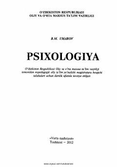

POliy ta'lim magistratura talabalari uchun mo'ljallangan psixologiya fanidan darslik.
Mazkur darslikda inson hayoti va faoliyatida psixologik bilimlarning o'rni, pedagogik faoliyat psixologiyasi, interfaol ta'lim metodlari va oilaviy munosabatlar psixologiyasi kabi dolzarb mavzular yoritilgan. Shuningdek, shaxs taraqqiyoti, ijtimoiylashuv omillari va pedagogik jamoalarni boshqarish masalalari ilmiy jihatdan tahlil etilgan. Kitob oliy ta'lim muassasalari magistratura bosqichi talabalari uchun mo'ljallangan.